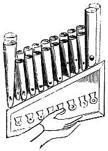
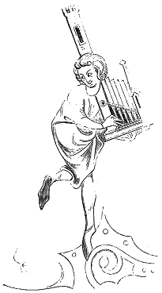
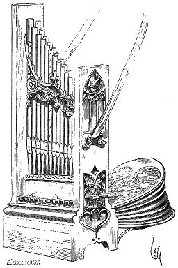

Eugène VIOLLET le DUC
Dictionnaire raisonné du mobilier.ORGUE (de main), s. m. Instrument composé d'un jeu de tuyaux avec petite soufflerie. Nous ne nous occupons ici que des orgues de main. L'orgue primitif n'est autre chose que le sistre ou flûte de Pan, avec petit réservoir d'air comprimé et soupapes mues par des touches. Il est à croire que les premières orgues n'avaient que des tuyaux de roseau. Mais les anciens, Asiatiques, Grecs et Romains, connaissaient déjà les grandes orgues à tuyaux de métal, dont la soufflerie était alimentée par des pompes hydrauliques. Toutefois ces instruments restèrent ignorés en Occident après l'invasion des barbares, jusqu'au VIIIe siècle, époque où l'empereur Constantin Copronyme envoya un orgue à Pepin le Bref. Cet orgue, ainsi que celui envoyé à Charlemagne par l'empereur Constantin Curopalate, celui de l'église de Vérone (VIIIe siècle), et celui que l'empereur Louis le Débonnaire fit placer dans l'église d'Aix-la-Chapelle, étaient des instruments stables et à soufflets1. Nous ne voyons apparaître, en France, les orgues à main que sur les monuments figurés du Xe siècle. Ces instruments se composent d'un coffre sur lequel sont plantés les tuyaux, d'un petit clavier et d'un soufflet ; on jouait sur le clavier de la main droite, et de la gauche on faisait mouvoir le soufflet en tenant le coffre appuyé sur le bras et contre la poitrine.
 Figure 1 Voici (fig. 1) un de ces petits orgues portatifs possédant deux rangs de huit tuyaux chacun, avec quatre tuyaux plus forts aux deux extrémités du sommier. Le clavier ne se compose que de huit touches. Ces touches auraient donc fait parler deux tuyaux à la fois, tandis que les quatre gros tuyaux auraient composé un bourdon continue2. Tout cela est fort hypothétique. Une autre miniature d'une époque plus récente (fig. 23) nous montre un joueur d'orgue à main composé seulement de six tuyaux avec clavier. L'instrument est monté sur une caisse plate, avec deux montants, dont l'un, très élevé, est appuyé sur l'épaule gauche de l'exécutant. Pendant les XIIIe et XIVe siècles, ces petits jeux d'orgues diffèrent assez peu dans la forme, et le nombre des tuyaux est variable. Ce n'est guère qu'au XVe siècle que ces instruments paraissent être perfectionnés. Un joli tableau de l'école allemande, déposé à la Pinacothèque de Munich et attribué à Wohlgemuth, représente une sainte Cécile jouant d'un orgue à main composé de deux rangs de douze tuyaux chacun, avec clavier de douze touches, quatre registres et un soufflet (fig. 3). L'instrument pouvait être suspendu en bandoulière au moyen d'une courroie retenue aux montants par deux petites poignées de métal. Le soufflet est posé sur deux potences également de métal fixées au sommier. Ces petits instruments devaient avoir à peu près la sonorité des orgues dites de Barbarie. Leurs tuyaux sont toujours indiqués comme étant fabriqués de métal.
|
 Figure 2 |
 Figure 3 |
Ces orgues de main étaient fort prisées dans les fêtes civiles, car il ne paraît guère qu'on les ait admises dans les églises, où l'on se servait de grandes orgues pneumatiques.
Les orgues de main accompagnaient donc au besoin la voix de la personne qui touchait de l'instrument.
Dans les chapelles de châteaux, on avait au XIVe siècle des orgues stables, mais de très petite dimension, puisque dans le Journal de la dépense du roi Jean en Angleterre on lit cet article : « Clément, clerc de la chapelle, pour faire porter les orgues de Herthford à Londres par 2 valez, et pour cordes à les lier, 7 d. 3 d. 4 »
Pour que deux hommes pussent transporter cet instrument, il fallait qu'il ne fût guère pesant. Christine de Pisan nous apprend que pendant les repas, à la cour du roi Charles V, on jouait de l'orgue. Sur des estrades, aux entrées des souverains, dans les carrefours, étaient montées de petites orgues qui accompagnaient les voix des chanteurs. Cet usage se perpétua jusqu'au XVIe siècle.
A l'entrée de la reine Isabeau de Bavière à Paris, devant la chapelle Saint-Jacques, était dressé un « escharfaut faict et ordonné très richement, séant au dextre, ainsy comme ils y alloient et estoient, ledit escharfaut couvert de drap de haute lice et encourtiné à la manière d'une chambre ; et dedans cette chambre avoient hommes qui sonnoient une orgue moult doucement5... »
Notes :
(1) Voyez, dans la trad. du Rationale de Guillaume Durand, par M. C. Barthélemy, une bonne Notice histor. sur les grandes orgues (t. 11, p. 489).
(2) Ancien fonds Saint-Germain, Bibiblioth. impér. (XIIIe siècle).
(3) Hist. du saint Graal, manuscr. Bibiblioth. impér. (fin du XIIIe siècle).
(4) Comptes de l'argenterie des rois de France, publ. par L. Douët-d'Arcq, p. 214 (1349).
(5) Froissart, Chroniques, liv. IV.